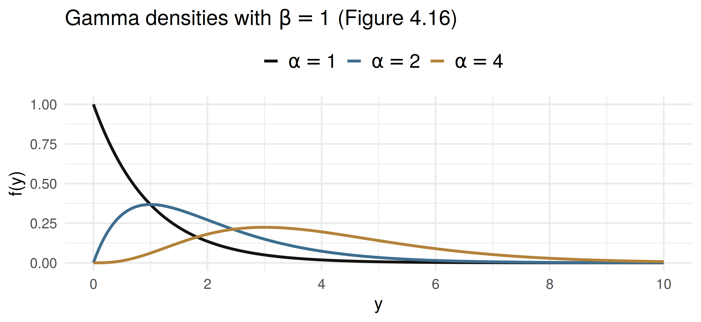

[1] 1 1 6 720Mathematical Statistics
The Gamma, Exponential and Chi-Square Distributions
Samir Orujov, PhD
ADA University, School of Business
Information Communication Technologies Agency, Statistics Unit
2026-09-24
🎯 Learning Objectives
By the end of this lecture, you will be able to:
State the gamma density (Definition 4.9) and use \(\Gamma(n) = (n-1)!\)
Derive \(E(Y) = \alpha\beta\) and \(V(Y) = \alpha\beta^2\) by recognising a gamma integral (Theorem 4.8)
Compute gamma probabilities and quantiles in R, minding that R wants the rate \(1/\beta\)
Identify the chi-square and exponential distributions as gamma special cases
Use the memoryless property of the exponential, and say when it is a poor model
🗺️ Where We Are
Wackerly §4.6
Wednesday: the normal distribution, symmetric about \(\mu\) and spread over the whole real line.
Many quantities in finance are neither. A waiting time, a lifetime, a repair time cannot be negative, and most of their mass sits near zero with a long tail to the right.
Today’s family is built for exactly that shape, and it contains two special cases we will use for the rest of the course: the exponential and the chi-square.
❓ Motivating Question
On an interbank AZN/USD desk, the gap between two large trades (above 1 million USD) averages 25 minutes, with a standard deviation of about 25 minutes.
Model the gap as normal with \(\mu = \sigma = 25\) and it gives \[P(Y < 0) = P(Z < -1) = 0.1587\] Sixteen percent of gaps would be negative. The model is not slightly wrong; it is wrong in kind.
We need a density that lives on \([0, \infty)\), is skewed right, and still has a mean and a variance we can compute.
📐 Definition 4.9: The Gamma
Definition 4.9
\(Y\) has a gamma distribution with parameters \(\alpha > 0\) and \(\beta > 0\) if and only if \[f(y) = \begin{cases} \dfrac{y^{\alpha-1} e^{-y/\beta}}{\beta^{\alpha}\,\Gamma(\alpha)}, & 0 \le y < \infty, \\[4pt] 0, & \text{elsewhere,} \end{cases} \qquad \Gamma(\alpha) = \int_0^\infty y^{\alpha-1} e^{-y}\,dy.\]
\(\alpha\) is the shape parameter; \(\beta\) is the scale parameter. Multiplying \(Y\) by a positive constant changes \(\beta\) and leaves \(\alpha\) alone.
🔢 The Gamma Function
\(\Gamma(\alpha)\) is only there to make the density integrate to 1. Three facts do all the work:
- \(\Gamma(1) = 1\), by direct integration
- \(\Gamma(\alpha) = (\alpha - 1)\,\Gamma(\alpha - 1)\) for \(\alpha > 1\), by parts
- \(\Gamma(n) = (n-1)!\) for a positive integer \(n\)
So the gamma function is the factorial, shifted by one and extended to every \(\alpha > 0\).
📈 What the Shape Parameter Does

At \(\alpha = 1\) the mode is at zero; as \(\alpha\) grows the peak moves right and the tail thins.
📐 Theorem 4.8: Mean and Variance
Theorem 4.8
If \(Y\) has a gamma distribution with parameters \(\alpha\) and \(\beta\), then \(\mu = E(Y) = \alpha\beta\) and \(\sigma^2 = V(Y) = \alpha\beta^2\).
The trick. The density integrates to 1, so \(\int_0^\infty y^{\alpha-1}e^{-y/\beta}\,dy = \beta^{\alpha}\Gamma(\alpha)\) for every \(\alpha > 0\). Then \[E(Y) = \frac{1}{\beta^{\alpha}\Gamma(\alpha)}\int_0^\infty y^{\alpha}e^{-y/\beta}\,dy = \frac{\beta^{\alpha+1}\Gamma(\alpha+1)}{\beta^{\alpha}\Gamma(\alpha)} = \alpha\beta.\]
The same step with \(\alpha + 2\) gives \(E(Y^2) = \alpha(\alpha+1)\beta^2\), so \(V(Y) = \alpha\beta^2\).
🏢 Worked Example: Waiting for Claims
A Baku property insurer tracks the time \(Y\), in days, until its third large claim of the quarter. \(Y\) is gamma with \(\alpha = 3\), \(\beta = 4\).
Moments. \(E(Y) = 3 \times 4 = 12\) days; \(V(Y) = 3 \times 16 = 48\), so \(\sigma = 6.93\) days.
A tail probability. With integer \(\alpha\), Exercise 4.99 turns the gamma tail into a Poisson sum with mean \(20/\beta = 5\): \[P(Y > 20) = \sum_{x=0}^{2} \frac{5^x e^{-5}}{x!} = 18.5\,e^{-5} = 0.1247\]
One quarter in eight, the claims desk waits more than 20 days for its third large claim.
💻 The Same Numbers in R
mean var
12 48 [1] 0.124652[1] 0.124652[1] 25.18317The trap: R’s third argument is the rate \(1/\beta\), as in the book’s pgamma(y0, α, 1/β). Pass \(\beta\) there and the answer is silently wrong.
📐 Definition 4.10: Chi-Square
Definition 4.10
Let \(\nu\) be a positive integer. \(Y\) has a chi-square distribution with \(\nu\) degrees of freedom if and only if \(Y\) is gamma with \(\alpha = \nu/2\) and \(\beta = 2\).
Theorem 4.9
If \(Y\) is \(\chi^2\) with \(\nu\) degrees of freedom, then \(E(Y) = \nu\) and \(V(Y) = 2\nu\).
Proof: Theorem 4.8 with \(\alpha = \nu/2\), \(\beta = 2\). The name “degrees of freedom” is explained in Theorem 6.4; for now it is just the parameter.
🖥️ Gamma to Chi-Square: A Repair Time
The time \(Y\), in hours, to restore a failed rack in a bank’s data centre is gamma with \(\alpha = 1.5\), \(\beta = 4\). What is \(P(Y < 3.5)\)?
Exercise 6.46 will show: if \(\alpha = n/2\), then \(2Y/\beta\) is \(\chi^2\) with \(n\) degrees of freedom. Here \(2Y/4 = Y/2\) is \(\chi^2_3\), so \[P(Y < 3.5) = P(Y/2 < 1.75) = P(\chi^2_3 < 1.75)\]
gamma chisq
0.3741245 0.3741245 About 37% of rack failures are fixed within 3.5 hours.
📐 Definition 4.11: The Exponential
Definition 4.11
\(Y\) has an exponential distribution with parameter \(\beta > 0\) if and only if \[f(y) = \begin{cases} \dfrac{1}{\beta}\, e^{-y/\beta}, & 0 \le y < \infty, \\[4pt] 0, & \text{elsewhere.} \end{cases}\]
Theorem 4.10
If \(Y\) is exponential with parameter \(\beta\), then \(E(Y) = \beta\) and \(V(Y) = \beta^2\).
It is the gamma with \(\alpha = 1\), and the one member whose distribution function has a closed form: \(P(Y > y) = e^{-y/\beta}\).
💾 Worked Example: Drive Lifetimes
Solid-state drives in a data centre fail after an exponential lifetime with mean \(\beta = 5\) years.
Survival past the warranty. \(P(Y > 3) = e^{-3/5} = 0.5488\). Just over half the drives outlast a 3-year warranty.
An early-replacement threshold. Which age \(t\) do only 10% of drives fail before? \[1 - e^{-t/5} = 0.10 \;\Rightarrow\; t = -5\ln(0.90) = 0.527 \text{ years} \approx 6.3 \text{ months}\]
Because \(\sigma = \beta = 5\) years, lifetimes are as variable as they are long: a fleet mean says little about one drive.
🧠 Example 4.10: Memoryless
If \(Y\) is exponential and \(a, b > 0\), then \[P(Y > a + b \mid Y > a) = \frac{P(Y > a + b)}{P(Y > a)} = \frac{e^{-(a+b)/\beta}}{e^{-a/\beta}} = e^{-b/\beta} = P(Y > b)\]
The intersection of \((Y > a + b)\) and \((Y > a)\) is just \((Y > a + b)\); that is the whole proof.
Having survived \(a\) units tells you nothing about the next \(b\). The geometric distribution in Chapter 3 had the same property (Exercise 4.95 links the two).
☎️ Memoryless at a Bank Call Centre
Hold time at a bank’s call centre is exponential with mean 4 minutes, so \(P(Y > 2) = e^{-0.5} = 0.6065\). A caller has already held 5 minutes. Simulating 100,000 calls:
fresh_caller waited_5_mins exact
0.6048000 0.6045887 0.6065307 The caller who has waited 5 minutes is no closer to being answered. Whether that is realistic is a modelling question: a queue that clears in order does remember.
🔬 Same Mean, Different Shape
Code
Code
lgam = x => {
const g = 7, c = [0.99999999999980993, 676.5203681218851, -1259.1392167224028,
771.32342877765313, -176.61502916214059, 12.507343278686905,
-0.13857109526572012, 9.9843695780195716e-6, 1.5056327351493116e-7];
x -= 1; let a = c[0]; const t = x + g + 0.5;
for (let i = 1; i < 9; i++) a += c[i] / (x + i);
return 0.5 * Math.log(2 * Math.PI) + (x + 0.5) * Math.log(t) - t + Math.log(a);
}
scaleB = 10 / shape
dens = y => y <= 0 ? (shape === 1 ? 1 / scaleB : 0) :
Math.exp((shape - 1) * Math.log(y) - y / scaleB - shape * Math.log(scaleB) - lgam(shape))
grid = Array.from({length: 601}, (_, i) => ({y: i * 0.05, f: dens(i * 0.05)}))
tail = {
let s = 0; const h = 0.01;
for (let y = 15; y < 200; y += h) s += h * (dens(y) + dens(y + h)) / 2;
return s;
}
md`α = **${shape}**, β = **${scaleB.toFixed(2)}**: σ = **${(10 / Math.sqrt(shape)).toFixed(2)}**, and P(Y > 15) = **${tail.toFixed(4)}**`Code
Plot.plot({
width: 1150,
height: 310,
marginTop: 40,
marginLeft: 78,
marginBottom: 58,
style: {fontSize: "18px"},
x: {label: "Waiting time y (mean 10)", domain: [0, 30]},
y: {label: "f(y)", grid: true},
marks: [
Plot.areaY(grid.filter(d => d.y >= 15), {x: "y", y: "f", fill: "#cbb8a9"}),
Plot.line(grid, {x: "y", y: "f", stroke: "#14130f", strokeWidth: 2.5}),
Plot.ruleX([10], {stroke: "#8b2635", strokeDasharray: "4 4"}),
Plot.ruleY([0])
]
})🧠 Think-Pair-Share
Back to the AZN/USD desk. Gaps between large trades are now modelled as exponential with mean 25 minutes.
Four minutes, in pairs:
What is the probability that a gap exceeds 30 minutes?
No large trade for 40 minutes. What is the probability that one arrives in the next 10?
The time \(W\) until the third large trade is gamma with \(\alpha = 3\), \(\beta = 25\). Find \(E(W)\) and the standard deviation of \(W\).
✅ Think-Pair-Share: Solution
\(P(Y > 30) = e^{-30/25} = e^{-1.2} = 0.3012\).
Memoryless: the 40 minutes are irrelevant. \[P(Y \le 50 \mid Y > 40) = P(Y \le 10) = 1 - e^{-0.4} = 0.3297\]
Theorem 4.8: \(E(W) = 3 \times 25 = 75\) minutes, \(V(W) = 3 \times 625 = 1875\), so \(\sigma_W = 43.30\) minutes.
Compare with the normal model in the motivating question: this one never puts mass below zero, and its \(\sigma\) equals its mean for a single gap, as the desk observed.
📝 Quiz #1: Chi-Square Moments
\(Y\) has a chi-square distribution with 8 degrees of freedom. What are \(E(Y)\) and \(V(Y)\)?
- \(E(Y) = 8\), \(V(Y) = 16\)
- \(E(Y) = 4\), \(V(Y) = 8\)
- \(E(Y) = 8\), \(V(Y) = 64\)
- \(E(Y) = 16\), \(V(Y) = 32\)
📝 Quiz #2: A Server Fan
A cooling fan’s lifetime is exponential with mean 4 years. It has already run 2 years. What is the probability it runs at least 1 more year?
- \(e^{-1/4} = 0.7788\)
- \(e^{-3/4} = 0.4724\)
- \(1 - e^{-1/4} = 0.2212\)
- \(e^{-2/4} = 0.6065\)
📝 Quiz #3: Back Out the Parameters
A payment-processing delay is gamma distributed with mean 6 seconds and variance 12 seconds². What are \(\alpha\) and \(\beta\)?
- \(\alpha = 3\), \(\beta = 2\)
- \(\alpha = 2\), \(\beta = 3\)
- \(\alpha = 6\), \(\beta = 1\)
- \(\alpha = 0.5\), \(\beta = 12\)
📋 Key Formulas
| Density on \(y \ge 0\) | \(E(Y)\) | \(V(Y)\) | |
|---|---|---|---|
| Gamma, Def. 4.9 | \(\dfrac{y^{\alpha-1}e^{-y/\beta}}{\beta^{\alpha}\Gamma(\alpha)}\) | \(\alpha\beta\) | \(\alpha\beta^2\) |
| \(\chi^2_\nu\), Def. 4.10 | gamma, \(\alpha = \nu/2\), \(\beta = 2\) | \(\nu\) | \(2\nu\) |
| Exponential, Def. 4.11 | \(\dfrac{1}{\beta}e^{-y/\beta}\) | \(\beta\) | \(\beta^2\) |
- \(\Gamma(n) = (n-1)!\) and \(\Gamma(\alpha) = (\alpha-1)\Gamma(\alpha-1)\)
- Exponential: \(P(Y > y) = e^{-y/\beta}\) and \(P(Y > a+b \mid Y > a) = P(Y > b)\)
- In R:
pgamma(y, alpha, 1/beta),qgamma(p, alpha, 1/beta)
📋 Summary
The gamma family models quantities that are nonnegative and skewed right: waiting times, lifetimes, repair times
\(\alpha\) sets the shape, \(\beta\) the scale; with the mean fixed, a larger \(\alpha\) means a thinner tail
Theorem 4.8 follows from one idea: every gamma integral is \(\beta^{\alpha}\Gamma(\alpha)\)
Chi-square (\(\alpha = \nu/2\), \(\beta = 2\)) and exponential (\(\alpha = 1\)) are gamma special cases
The exponential is memoryless, which is both its convenience and its limitation
📚 Practice Problems
Wackerly, 7th edition
Exercises at the end of §4.6: start with 4.81, 4.82, 4.88, 4.89 and 4.91, then 4.96, 4.104 and 4.106 – 4.109
Re-set Exercise 4.91 as a bank’s cash-demand problem: what vault holding keeps the chance of a shortfall at 1%?
Week 10, Problem Set 2 is open now and closes Sunday 22 November at 23:59 on WeBWorK, covering §4.6.
Next class: 18 November, the beta distribution and how to choose a continuous model (Wackerly §4.7 – 4.8).
🙏 Thank You
Dr. Samir Orujov
📧 sorujov@ada.edu.az
🏢 Building D, Room D325
🕓 Office hours: Wednesday, 16:00 – 18:00
Slides and readings: sorujov.net/teaching
❓ Questions
A drive that has run 4 years is as good as new under the exponential model. What would you look for in real failure data to reject that?
Why does the gamma tail have a Poisson-sum form only when \(\alpha\) is an integer?
With the mean held fixed, what happens to the gamma density as \(\alpha \to \infty\), and which distribution does it start to resemble?

Mathematical Statistics I - Gamma, Exponential and Chi-Square